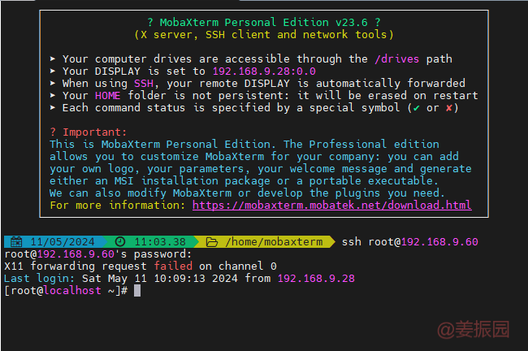

背景
咱们有时不得不自己去搭建一个测试环境，保证自己的测试可以顺畅进行。测试环境可以运行在物理机或者虚拟机上。测试环境在物理机上无疑更真实、准确，但物理机价格、便捷方面都不如虚拟机，而且虚拟机通过精心搭配，真实、准确方面也不容小觑。
现在市面上的虚拟机软件不少。如Vmware、VirtualBox、QEMU、Parallels Desktop、Microsoft Hyper-V等。那为什么推荐VMware呢？因为只用过它😅。无论如何，开始我们的VMware之旅吧。
准备VMware
下载VMware
根据自己的系统去下载对应版本

请注意这里下载的是Pro版本，是收费的。你也可以去下载免费版本，或者去搜激活码来进行激活。不过你懂的，我不提供方法。
安装VMware
下载成功后，双击安装后一直下一步就行。然后界面如下：
我这里已经搭建了2个虚拟机了，你们刚进去的时候，是没有这两个虚拟机的。
新建虚拟机
此时一个虚拟机就搭建好了。图中的测试安装centos 7
设置虚拟机
后面还需对虚拟机进行一些设置，才能达成目的。
有关网络连接的知识可以访问使用 VMware Workstation Pro进行了解。
运行虚拟机
点击运行虚拟机后，VMware开始运行ISO镜像文件。然后就是各个系统经典的初始化界面。我这里以centos 7 为例。
以上示例的是centos7。需要知道的是，每个系统的初始化界面可能有区别。比如windows一定与centos 7不同。
网络配置
此时安装好的centos 7还不能访问inter网、局域网，甚至主机。要访问其他网络，需要进行一些配置。我们以桥接模式为例。
VMware上进行设置
centos 7上进行配置
-
查看网口信息
# 查看网口信息 ip link # 示例centos 7，输出信息如下： 1: lo: <LOOPBACK,UP,LOWER_UP> mtu 65536 qdisc noqueue state UNKNOWN mode DEFAULT group default qlen 1000 link/loopback 00:00:00:00:00:00 brd 00:00:00:00:00:00 2: ens33: <BROADCAST,MULTICAST,UP,LOWER_UP> mtu 1500 qdisc pfifo_fast state UP mode DEFAULT group default qlen 1000 link/ether 00:0c:29:cf:f0:d8 brd ff:ff:ff:ff:ff:ff输出的网口信息有
lo、ens33.-
lo是本地回环接口，通常用于本地主机上的网络服务。它总是激活的，并且可以用于本地主机上的网络请求。 -
ens33是一个以太网接口。这个接口是连接到物理网络的，但是当前的输出并没有显示IP地址分配情况。
-
-
编辑网络配置文件。
# 编辑ens33的配置文件 vi /etc/sysconfig/network-scripts/ifcfg-ens33 -
配置网络接口
# 只需要自动分配IP就行。修改以下配置。 BOOTPROTO=dhcp ONBOOT=yes -
重启网络服务：
# 保存并关闭配置文件，然后重启网络服务以应用更改 sudo systemctl restart network -
验证网络配置
# 使用ping命令测试网络连接 ping -c 4 8.8.8.8 # 使用ip addr 检查IP地址 ip addr
-
远程连接
使用
MobaXterm远程。如果远程失败，可以使用
systemctl stop firewalld关闭防火墙，再远程。

© 转载需要保留原始链接，未经明确许可，禁止商业使用。CC BY-NC-ND 4.0